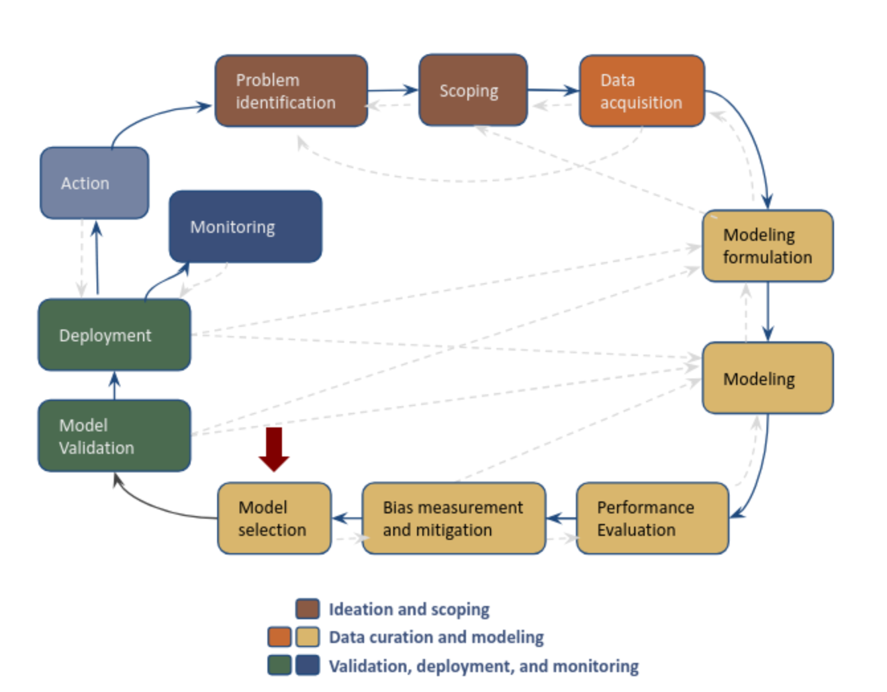

Post-modeling#
Introduction#
Post-modeling analysis takes part in the “Model Selection” stage on an AI/ML/DS project life cycle. In this the phase we select the model that we would like to validate on a field trial from a subset of models previously selected based mainly in performance and bias metrics aligned with the goals of the project defined in terms of efficiency, effectiveness, and equity (audition phase).
{kind=link}
The goal of this phase is to understand and characterize the entities shown on the top k of the lists generated by the selected subset of models, so that you:
Know the characteristics of the entities that your model will serve
Know the differences in the values of the features used by your model between the entities in your top k vs the rest of the list
Know the differences between the entities in your top k and other top k lists from different models
Identify the entities that are present in different lists
Know the features associated with your errors in top k (FP) and the errors in the rest of your list (FN)
Know the entities flagged by your model and missed by others
Know the entities flagged by other models missed by yours
In order to get all this information, you will require to do different type of analyses
Types of analyses in this playbook:
[Error analysis FPs]
[Error analysis FNs]
Crosstabs#
This analysis gives you information about the differences in values of the features used in a particular model between the entities in the top k and the rest of the list, it’s calcualed as the mean ratio between the top k entities and the rest of the list (by default). You can also do crosstabs between the top k lists from different models, as long as they share the features used as predictors.
Crosstabs will allow you to understand the characteristics of the entities selected in the top k vs the entities not in the top k. For example, if you have as a feature number of calls and the mean ratio is 350.23, it means that the entities at the top k have a 350 fold increase in the number of calls they made vs the people not at the top k.
There are two ways in which you can generate crosstabs for a particular model (model_id):
Generating the crosstabs from the database
Generating the crosstabs from the matrices generated
Both recipes shared the same ingredients, and what to look for, they differ only on the way to cook them.
To generate crosstabs from a particular model (model_id) you will need:
🥕 Ingredients:
A
model idPredictions generated and stored in the database. In case you don’t have them you can follow this recipe.
A connection to the DB. In case you don’t have one you can follow this recipe
Generating crosstabs from database
👩🍳 How to cook:
from triage.component.postmodeling.base import SingleModelAnalyzer
# in case your matrices and trained models are stored in S3 buckets
project_path = 's3://name-of-your-bucket/triage_output/'
# in case your matrices and trained models are stored in local File System
#project_path = "/mnt/data/path/to/your/project/triage_output/'
thresholds = {'rank_abs_no_ties': 100} # top 100 abs
model_id = 10757
model_analyzer = SingleModelAnalyzer(model_id_, db_conn)
model_analyzer.crosstabs_pos_vs_neg(project_path, thresholds)
Generating crosstabs from features matrix
👩🍳 How to cook:
from triage.component.postmodeling.crosstabs import run_crosstabs_from_matrix
from triage.util.db import create_engine
# in case your matrices and trained models are stored in S3 buckets
project_path = 's3://name-of-your-bucket/triage_output/'
# in case your matrices and trained models are stored in local File System
#project_path = "/mnt/data/path/to/your/project/triage_output/'
threshold_type = 'rank_abs_no_ties' # absolute ranking with no ties
threshold = '100' # top 100 abs
model_id = 10757
# check recipe for generating a connection to the database!
crosstabs_df = run_crosstabs_from_matrix(db_engine,
project_path,
model_id,
threshold_type,
threshold)
🍲 What to look for
Triage should have created (or append rows to) the table crosstabs (on test_results schema) in your DB with the crosstabs for the model id passed. You can retrieve the calculations with the following snippet of code:
q = f"""
select
model_group_id,
model_id,
model_type,
train_end_time,
metric,
feature,
value
from triage_metadata.experiment_models a
join triage_metadata.models b
using (model_hash)
join test_results.crosstabs c
using (model_id)
where experiment_hash in ('{scorecard_simple_threshold_hash}', '{ml_experiments_hash}', '{new_model_all_features_hash}')
and model_group_id in ({model_group_scorecard_simple_threshold}, {model_group_original_rf}, {model_group_new_model_all_features})
and metric = 'mean_ratio'
limit 10
"""
pd.read_sql(q, db_conn)
Be aware that crosstabs generates the mean ratios for all the features used in your models, it can be overwhelming to go through all features to get relevant information that help you characterize your top k entities. We suggest to get the top 20 features with the biggest difference in values between the top k and the rest of the list (mean_ratio metric in the crosstabs table) and adjust as necessary.
\(\rightarrow\) Bear in mind that some of mean ratios have infinity values (because the denominator was 0), if you don’t want to retrieve those and focus only on the features that have the biggest difference you can add a condition when retrieving your results from the DB like the following snippet of code in which we are retrieving for each time split on a model group (each model id) the top 20 most different features ratios.
q = f"""
with most_diff as (
select
model_group_id,
model_id,
model_type,
train_end_time,
dense_rank() over (partition by model_id order by value desc) as rank_,
metric,
feature,
value
from triage_metadata.experiment_models a
join triage_metadata.models b
using (model_hash)
join test_results.crosstabs c
using (model_id)
where experiment_hash in ('{scorecard_simple_threshold_hash}', '{ml_experiments_hash}', '{new_model_all_features_hash}')
and model_group_id in ({model_group_scorecard_simple_threshold}, {model_group_original_rf}, {model_group_new_model_all_features})
and metric = 'mean_ratio'
and value is not null
and value != 'infinity'
),
top_20 as (
select *
from most_diff
where rank_ < 21
and metric in ('mean_ratio', 'mean_predicted_positive', 'mean_predicted_negative', 'support_predicted_positive')
)
select
model_group_id,
model_id,
model_type,
train_end_time::date,
rank_,
a.metric,
feature,
a.value
from test_results.crosstabs a
join top_20 b
using (model_id, feature)
"""
crosstabs = pd.read_sql(q, db_conn)
Lists similarities#
This analysis will let you identify how similar –or disimilar– two top k lists are. Based on three different metrics:
Jaccard similarity: This is telling you how similar are the lists based on the set created by the union of two lists. recipe
Overlap: How much intersection is between a pair of top k lists. This is telling you how many entities are present in both lists. You can also think about this as a way to see if the lists are highlighting different entities. This is very useful when you’re trying to answer if one model could replace another one –like a current process implemented by the partner–.
Rank correlation: How similar is the ranking between lists. This is telling you if the order in which the entities in one top k list is roughly the same –increasing or decresing monotonically (1, -1)– or if the order doesn’t have any correlation at all(value of 0).
We’ll go through the recipes of each metric:
Jaccard similiarity#
🥕 Ingredients
A list of
model_group_idsA metric and threshold of interest, e.g.,
precision@100_abs
👩🍳 How to cook:
🍲 What to look for
Overlap#
🥕 Ingredients
A list of
model_group_ids
👩🍳 How to cook:
🍲 What to look for
Rank correlation#
🥕 Ingredients
👩🍳 How to cook:
🍲 What to look for
Score distribution#
To generate the score distribution of a model you will need:
🥕 Ingredients
A
model idA connection to the DB. In case you don’t have one you can follow this recipe
👩🍳 How to cook:
from triage.component.postmodeling.base import SingleModelAnalyzer
sma = SingleModelAnalyzer(model_id, db_engine)
# define the matplotlib figure characteristics to use when ploting the scores (the code assumes we always have subplots)
# for example, in here were are defining 1 suplot with a width of 5 and a height of 4
fig, axes = plt.subplots(1, 1, figsize=(5, 4), sharey=True, sharex=True, dpi=100)
# plot the score distribution
sma.plot_score_distribution(axes)
🍲 What to look for
From the plot you can identify what is the range for the scores of the model specified: min, max, mean; as well as the count of entities in your model with that score.
🧂 Tips
You would like to see scores with different values. Having a small number of scores (low variety) could indicate that the model is not generalizing well
You can use the information of this plot in combination with the label distribution plot to get more information of the performance of the model
Label distribution#
🥕 Ingredients
A
model idA connection to the DB. In case you don’t have one you can follow this recipe
👩🍳 How to cook:
from triage.component.postmodeling.base import SingleModelAnalyzer
sma = SingleModelAnalyzer(model_id, db_engine)
# define the matplotlib figure characteristics to use when ploting the scores
# (the code assumes we always have subplots)
# for example, in here were are defining 1 suplot with a width of 5 and
# a height of 4
fig, axes = plt.subplots(1, 1, figsize=(5, 4), sharey=True, sharex=True, dpi=100)
# plot the score distribution
sma.plot_score_label_distribution(axes)
🍲 What to look for
From the plot you can visualize the ranges of the scores for the positive (label 1) and negative labels (label 0)
🧂 Tips
You would like to have the smallest overlap of score distributions between labels, which means that your model is good at identifying each label
You would like that the scores for your positive label are grater than the scores for you negative label
List characteristics#
Outcomes on label window#
Outcomes after label window#
Basic extra recipes#
Recipe: Creating a database engine#
To communicate with the database you will need to create a database engine. To create it, you will need:
🥕 Ingredients
An SQLAlchemy URL or a credentials
yamlfile or environment variables whith the database credentials
👩🍳 How to cook:
from triage.util.db import create_engine
from sqlalchemy.engine.url import URL
# if credentials are stored in a credentials yaml file
db_url = URL(
'postgres',
host=dbconfig['host'],
username=dbconfig['user'],
database=dbconfig['db'],
password=dbconfig['pass'],
port=dbconfig['port'],
)
# if credentials of the DB are stored in environment variables
# db_url = URL(
# 'postgres',
# host=os.getenv('PGHOST'),
# username=os.getenv('PGUSER'),
# database=os.getenv('PGDATABASE'),
# password=os.getenv('PGPASSWORD'),
# port=os.getenv('PGPORT'),
# )
db_conn = create_engine(db_url)
🍲 What to look for
You can verify that you created a succesfull connection to your DB with the following python code:
q = """
select run_hash, start_time
from triage_metadata.triage_runs
order by 2 desc
limit 1
"""
pd.read_sql(q, db_conn)
If the code runs, your connection was succesfull!
Recipe: Generating predictions and storing them in DB after the experiment has run in Triage#
As a good practice, you don’t save the predictons of your experiments until you have selected a subset of them based (mainly) on their performance \(\rightarrow\) You can use our Audition module to select this subsets of “best” models based on different strategies.
To generate predictions for a specified model (model_id) you can use the following recipe on a notebook (we suggest the one your are using for your postmodeling analysis 🙂):
🥕 Ingredients: You are going to need:
A database connection
The model group that has the model id that you are interested on generating the predictions for (it will generate the predictions for all the timechops, that’s why it requires the model group)
The model hash (is optional, but is better to put use it)
The project path from where your feature matrices and trained models are stored
👩🍳 How to cook:
from triage.component.postmodeling.add_predictions import add_predictions
# in case your matrices and trained models are stored in S3 buckets
project_path = 's3://name-of-your-bucket/triage_output/'
# in case your matrices and trained models are stored in local File System
#project_path = "/mnt/data/path/to/your/project/triage_output/'
add_predictions(db_conn,
[51, 135], #list of model groups, even if you only send 1 model group send it as a list
project_path,
['f2614123549000597dbda80cb6e629b4', 'e367965c86a197dbf624245d5bea0203'] # list of experiment hashes associated with the model groups (optional!)
)
🍲 What to look for
Now you can go to your database and confirm that the predictions have been generated and saved in the database with the following sql script:
select as_of_date, count(*)
from triage_metadata.experiment_models a
join triage_metadata.models b
using (model_hash)
join test_predictions.predictions c
using (model_id)
where experiment_hash in ('f2614123549000597dbda80cb6e629b4', 'e367965c86a197dbf624245d5bea0203')
and group_model_id in (51, 135)
group by 1
order by 1